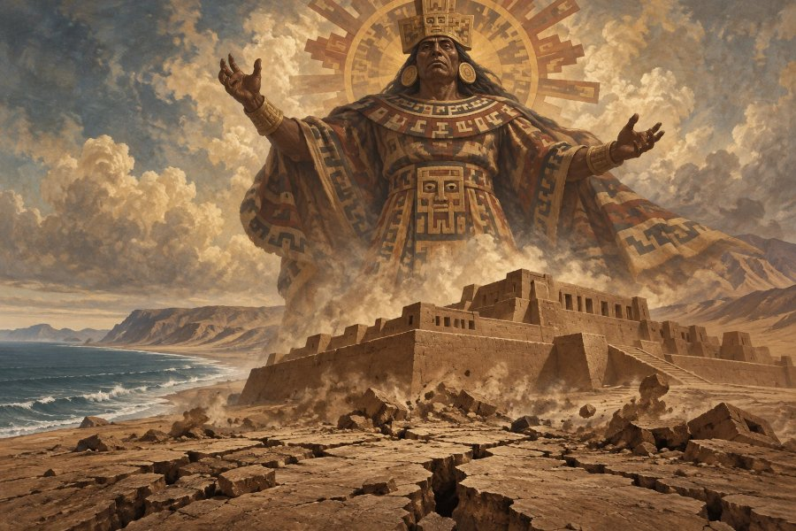
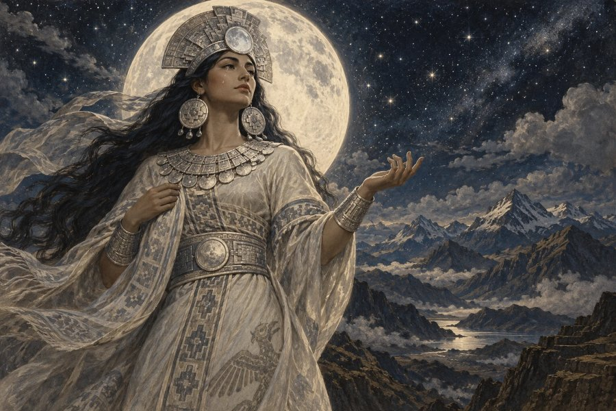

アステカ神話・インカ神話の神々
ケツァルコアトルからパチャママまで
八百万診断の「本当の正体」には、中南米の神話の神々も登場します。メキシコ中央部で栄えたアステカと、南米アンデスに大帝国を築いたインカ。どちらも太陽や雨、大地、海といった自然の恵みと深く結びついた神々を信仰していました。
🌞 アステカ神話の神々
アステカ（メシカ）は、14〜16世紀にメキシコ中央部で栄えた人々です。湖の上の都テノチティトランを中心に、太陽・雨・トウモロコシ・水などを司る多くの神々を祀りました。神々どうしがライバルになったり、力を合わせて世界をつくり直したりする、ダイナミックな神話が伝わっています。
ケツァルコアトル／トラロック／シペ・トテック／ショチケツァル／ウィツィロポチトリ／シウテクトリ／トラルテクトリ／コアトリクエ／テスカトリポカ／チャルチウィトリクエ

アステカ神話・神
ケツァルコアトル
「文明を授けた羽毛ある蛇」
羽毛に覆われた蛇の姿をしたアステカの神。人々に農耕や暦、学問を授けた文化の英雄として崇められました。知恵と理想で世界を良くしようとする人です。
日干が丙（ひのえ）の人の正体の候補です。
📍 ゆかりの地：テオティワカン（ケツァルコアトルの神殿）（メキシコ）

アステカ神話・神
トラロック
「恵みの雨と雷を操る雨の神」
雨と雷を司るアステカの神。恵みの雨で作物を育てる一方、怒れば嵐や干ばつをもたらすとされ、深く敬われていました。恵みと激しさを併せ持つ人です。
日干が壬（みずのえ）の人の正体の候補です。
📍 ゆかりの地：テンプロ・マヨール（メキシコ・メキシコシティ）

アステカ神話・神
シペ・トテック
「古い皮を脱ぎ捨てる芽吹きの神」
古い皮を脱ぎ捨てるように大地を生まれ変わらせ、春の芽吹きと実りをもたらすアステカの神。トウモロコシが殻を破って育つ姿の象徴でもあります。あなたも、何度でも自分を新しくして成長していける人です。
日干が甲（きのえ）の人の正体の候補です。
📍 ゆかりの地：国立人類学博物館（メキシコ・メキシコシティ）

アステカ神話・神
ショチケツァル
「花と愛と手しごとの女神」
花と美、愛、そして織物などの手しごとを司るアステカの女神。若々しい美しさの象徴で、職人や芸術家たちにも慕われました。あなたも、日々に花を添えるように、周りを明るく彩る人です。
日干が乙（きのと）の人の正体の候補です。
📍 ゆかりの地：国立人類学博物館（メキシコ・メキシコシティ）

アステカ神話・神
ウィツィロポチトリ
「民を導いた太陽と戦いの神」
アステカの人々を約束の地へ導き、首都テノチティトランを築かせたという太陽と戦いの神。生まれてすぐに武器をとって母を守ったと伝わります。あなたも、仲間を目的地へ導く熱いエネルギーの持ち主です。
日干が丙（ひのえ）の人の正体の候補です。
📍 ゆかりの地：テンプロ・マヨール（メキシコ・メキシコシティ）

アステカ神話・神
シウテクトリ
「炉の火を守り続ける古き火の神」
家々の炉の火と、時のめぐりを司るアステカの火の神。52年に一度、新しい火をおこす儀式で世界の続きを約束しました。あなたも、大切な火を絶やさず守り続ける、温かく誠実な人です。
日干が丁（ひのと）の人の正体の候補です。
📍 ゆかりの地：国立人類学博物館（メキシコ・メキシコシティ）

アステカ神話・神
トラルテクトリ
「その身が大地になった巨大な神」
神々に引き裂かれ、その体が大地や山、川になったというアステカの大地の神。草木も泉も、みなこの神の体から生まれたと伝わります。あなたも、自分を土台にして多くの人を支える、スケールの大きな人です。
日干が戊（つちのえ）の人の正体の候補です。
📍 ゆかりの地：テンプロ・マヨール（メキシコ・メキシコシティ）

アステカ神話・神
コアトリクエ
「蛇のスカートをまとう大地の母」
蛇のスカートをまとい、太陽と戦いの神ウィツィロポチトリを生んだアステカの大地の母神。命を生み育てる優しさと、すべてを土に還す厳しさをあわせ持ちます。あなたも、深い愛情と強さで大切な人を守る人です。
日干が己（つちのと）の人の正体の候補です。
📍 ゆかりの地：国立人類学博物館（メキシコ・メキシコシティ）

アステカ神話・神
テスカトリポカ
「黒曜石の鏡で心を映す夜の王」
「煙を吐く鏡」という名の、夜空と運命を司るアステカの神。黒曜石の鏡で人の心を映し出し、ケツァルコアトルと世界の主導権を争ったライバルです。あなたも、物事の本質を見抜く鋭い目を持っています。
日干が辛（かのと）の人の正体の候補です。
📍 ゆかりの地：国立人類学博物館（メキシコ・メキシコシティ）

アステカ神話・神
チャルチウィトリクエ
「翡翠のスカートをまとう水の女神」
「翡翠のスカートの女」という名をもつ、川や湖、泉を司るアステカの女神。生まれてくる赤ちゃんを清め、守る女神でもありました。あなたも、清らかな水のように人の心を洗い流し、癒やす人です。
日干が癸（みずのと）の人の正体の候補です。
📍 ゆかりの地：国立人類学博物館（メキシコ・メキシコシティ）
🏔️ インカ・アンデスの神々
インカは、15〜16世紀に南米アンデスの山々に大帝国を築きました。皇帝は太陽神インティの子とされ、首都クスコの太陽の神殿は黄金でおおわれていたと伝わります。母なる大地パチャママへの感謝は、今もアンデスの暮らしの中に息づいています。
インティ／ウィラコチャ／パチャカマック／パチャママ／マンコ・カパック／ママ・キリャ／ママ・コチャ

インカ神話・神
インティ
「黄金の国を照らす太陽神」
インカ帝国で最も崇められた太陽の神。皇帝はインティの子孫とされ、黄金は「太陽の汗」と呼ばれました。豊かさと実りをもたらす、あたたかな光の人です。
日干が丙（ひのえ）の人の正体の候補です。
📍 ゆかりの地：コリカンチャ（太陽の神殿）（ペルー・クスコ）

インカ神話・神
ウィラコチャ
「世界をつくり、旅して教えた創造神」
チチカカ湖から現れて太陽・月・星をつくり、人々に暮らしの知恵を教えながら旅を続けたインカの創造神。最後は海の向こうへ去っていったと伝わります。あなたも、新しい場所で道をつくり、人に教え導く人です。
日干が甲（きのえ）の人の正体の候補です。
📍 ゆかりの地：チチカカ湖（ペルー・ボリビア）

インカ・アンデスの神話・神
パチャカマック
「大地をゆるがす創造の神」
世界をつくり、大地を揺り動かす力をもつと信じられたアンデスの神。ペルーの海辺にある神殿には、そのお告げを聞きに、遠くから人々が集まりました。あなたも、ひとことで周りを動かす影響力の持ち主です。
日干が戊（つちのえ）の人の正体の候補です。
📍 ゆかりの地：パチャカマック遺跡（ペルー・リマ近郊）

インカ・アンデスの神話・神
パチャママ
「実りを恵むアンデスの母なる大地」
アンデスの人々が今も「母なる大地」として感謝をささげる女神。種をまく前や収穫のときには、まず大地にお供えをする習わしが続いています。あなたも、まわりを育て、実りをもたらす温かな人です。
日干が己（つちのと）の人の正体の候補です。
📍 ゆかりの地：クスコ（ペルー）

インカの伝説・伝説の初代王
マンコ・カパック
「黄金の杖で都を定めた初代の王」
太陽の子としてチチカカ湖から現れ、黄金の杖が地面に沈んだ場所にクスコの都を築いたというインカの初代の王。あなたも、迷わず「ここだ」と決め、新しい場所を切り開く決断力の持ち主です。
日干が庚（かのえ）の人の正体の候補です。
📍 ゆかりの地：チチカカ湖（ペルー・ボリビア）

インカ神話・神
ママ・キリャ
「銀の涙を流す月の女神」
太陽神インティの妻で、暦や女性たちを守るインカの月の女神。インカの人々は、銀を「月の涙」と呼んだと伝わります。あなたも、銀の光のように静かで上品な輝きを放つ人です。
日干が辛（かのと）の人の正体の候補です。
📍 ゆかりの地：コリカンチャ（太陽の神殿）（ペルー・クスコ）

インカ神話・神
ママ・コチャ
「漁師と船乗りを守る海の母」
海そのものとされ、漁師や船乗りを守ってきたインカの海の母神。荒波を鎮め、海の恵みを人々に分け与えると信じられました。あなたも、大きな心で人を受け入れ、恵みを分かち合う人です。
日干が壬（みずのえ）の人の正体の候補です。